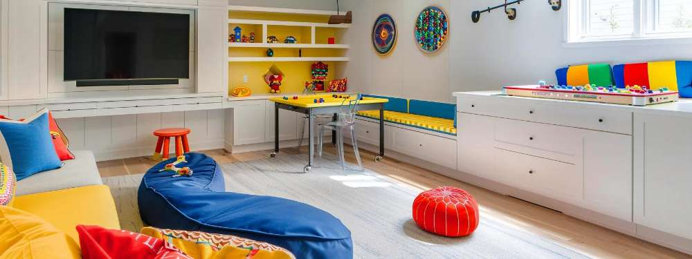
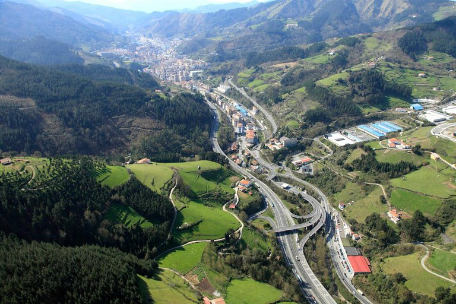
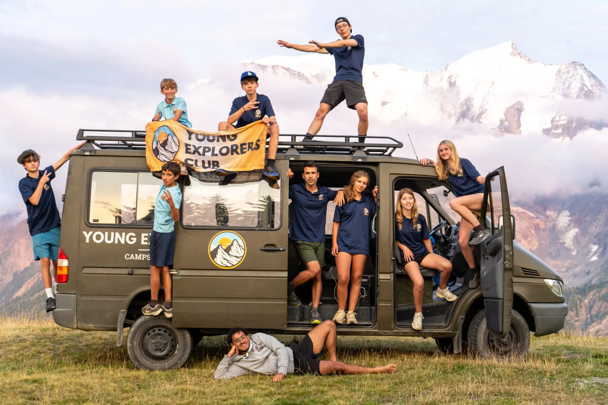

INFORMAZIO OROKORRA
Ongi etorri Ermuko Gaztelekuko atari ofizialera! Ermuko Udalaren babesarekin sortutako espazio honek 12 eta 18 urte bitarteko gazteei aisialdi hezitzailea, osasuntsua eta parte-hartzailea eskaintzea du helburu.
Gure webgunean honako aukera hauek dituzu eskura:
- Jardueren Egutegia: Atal honetan ikasturteko eta udako ekintzen egutegi osoa ikus dezakezu (hitzaldiak, irteerak, surf hastapena eta udalekuak).
- Gaztelekuari Buruz: Ermuko Udalaren babesari esker sortutako zerbitzua da, 12-18 urte arteko gazteei zuzendua. Bertan gure historia, helburuak, ordutegiak (asteartetik igandera), kokapena eta funtzionamendu arauak kontsulta ditzakezu.
- Izena Ematea: Eman izena erraz eta azkar formulario digitalaren bidez. Bazkideek prezio bereziak dituzte!
Jarduera guztiak elebiak dira (euskara eta ingelesa) eta bazkideek beherapen bereziak dituzte urteko kuotari esker.